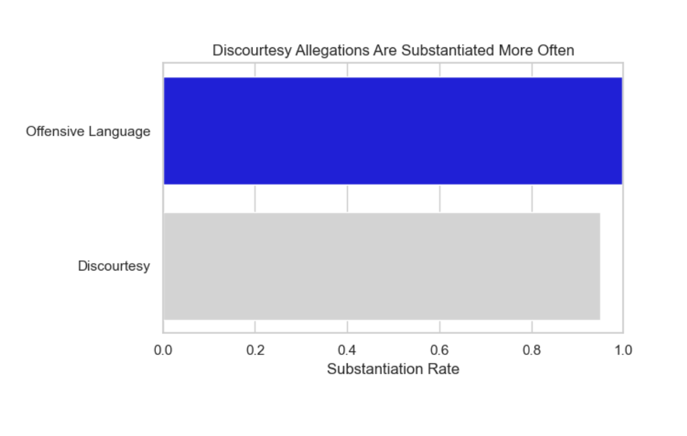
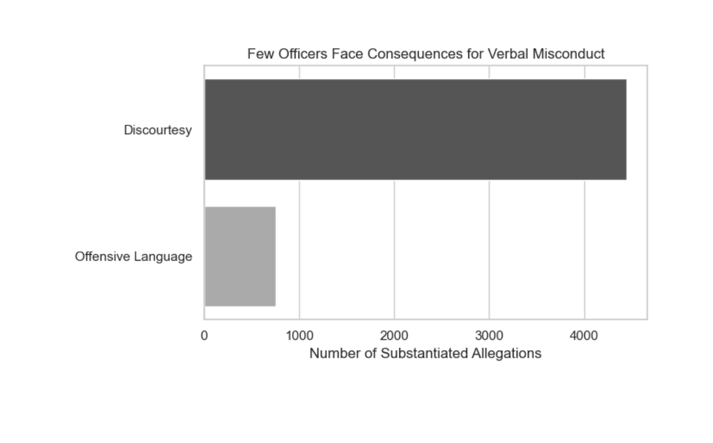

Proposition: Officers are more likely to face consequences for discourtesy than for offensive language
For the Proposition

Design Decisions and Rationale:
- Selective comparison (-1.5): Focused solely on complaints of discourtesy and offensive language to highlight contrast, ignoring other types of misconduct that could call into question the claim. This made it seem like the difference was more noticeable and compelling.
- Color encoding (0.5):Gray is used to make offensive language seem less urgent, and blue is used for discourtesy to evoke trust. Persuasion was aided by the emotional color contrast.
- Rate over raw counts (1): It was comparatively more common to suggest accountability using the percentage of substantiated complaints rather than the total number of complaints. Rates aided in identifying trends among disparate base counts.
- Bar width emphasized (0): Bars scaled uniformly, but by putting it first and giving it more room, they visually emphasized discourtesy. It framed how precedence was perceived by the viewer.
Against the Proposition

Design Decisions and Rationale:
- Raw counts instead of rates (1.5): Made the rate comparison seem inconsequential in the context of demonstrating that overall accountability is low across the board using absolute substantiation numbers.
- Neutral color palette (1): The use of gray tones implies institutional neutrality and minimizes emotional prominence. helps shift the focus from categorical comparison to the lack of results.
- Axis scale (-0.5): Used a small vertical range to make all values appear small, which reduced the perceived variations in substantiation.
- Minimalist style (1): The graph's lack of accountability is highlighted by the deliberate reduction of labels, colors, and distractions to make it appear dull or dry.
Final Reflection
I was compelled by this project to think about how visualization design can frame narratives. Despite the fact that both graphs are based on accurate data, they appear to tell different stories. The supporting graph employed rates and emotionally charged colors to show a relative difference, while the opposing graph removed context and emotion to emphasize how uncommon substantiation is in reality. One unforeseen challenge was how easily scale or layout could skew interpretation.
I no longer see ethical visualization as just a technical task, but as a responsibility to clarify without distorting intent. While overtly dishonest tactics, such as changing axes or omitting crucial information, run the risk of going beyond that ethical boundary, persuasive techniques, such as choosing colors or rates, are acceptable. In ethical analysis, transparency and persuasion are balanced. Because visualizations have the ability to either inform or mislead, it is our duty to guide viewers through the space in an ethical manner.